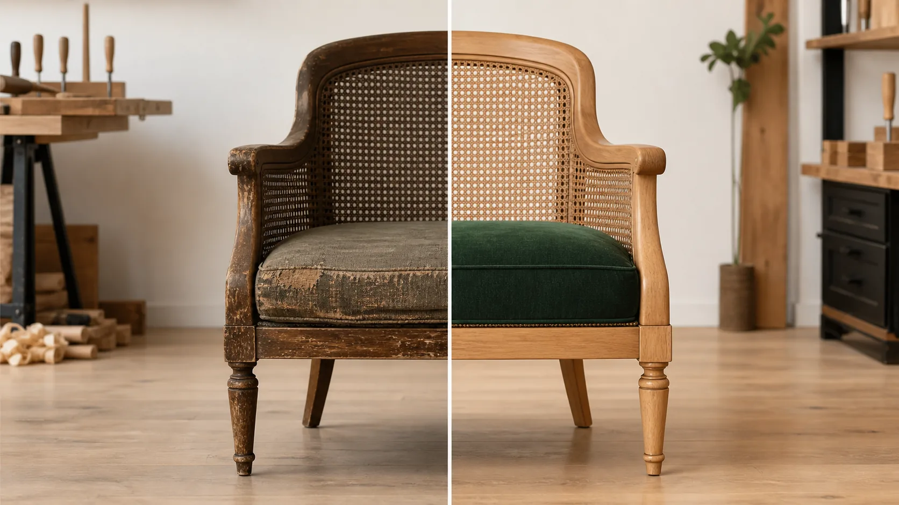
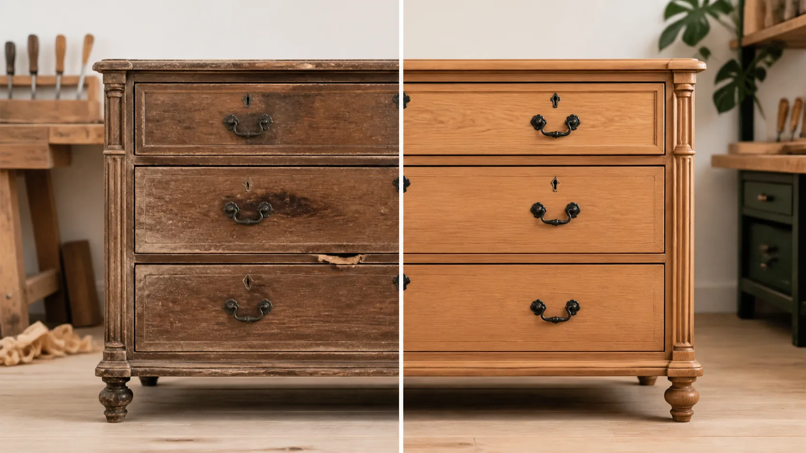
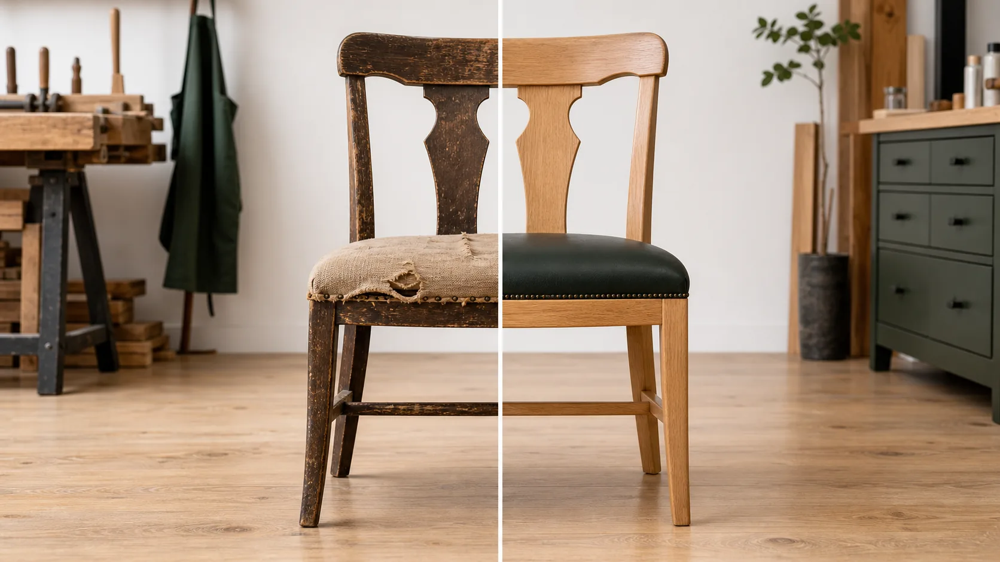

Restauração de móveis antigos
Recuperação estética com preservação da identidade da peça.
OrçamentoRestauração artesanal
Restauração e recuperação de móveis com acabamento cuidadoso e atenção aos detalhes.

Sobre o trabalho
Marcelo Restaurador trabalha peça por peça, avaliando estrutura, madeira, encaixes, superfície e acabamento antes de definir o melhor caminho.
Restaurar é recuperar valor e evitar descarte. Um móvel bem cuidado volta a ocupar a casa com presença, utilidade e memória.
Atendimento regional em Urupês - SP para quem busca reforma de móveis com padrão artesanal e comunicação direta.
Serviços
Recuperação estética com preservação da identidade da peça.
OrçamentoReforço de encaixes, partes soltas e pontos comprometidos.
OrçamentoCorreção de riscos, marcas, falhas e desgaste do uso.
OrçamentoEstrutura firme, acabamento renovado e assentos revitalizados.
OrçamentoMelhorias pontuais para devolver beleza e funcionalidade.
OrçamentoAntes e depois
Fotos vendem porque deixam o cuidado evidente: madeira recuperada, estrutura firme e acabamento com aparência de peça nova sem perder a história.


Como funciona
Mostre o móvel, danos, medidas aproximadas e sua ideia de acabamento.
Marcelo avalia possibilidades, prazo e melhor solução para a peça.
Limpeza, reparo, lixamento, reforços e acabamento com atenção aos detalhes.
O móvel volta pronto para uso, bonito e com estrutura recuperada.
Depoimentos
★★★★★"Parecia impossível recuperar."
Cliente de Urupês
★★★★★"Ficou melhor que novo."
Reforma de mesa
★★★★★"Serviço extremamente caprichado."
Cadeiras restauradas
Orçamento
O primeiro passo é simples: mande imagens pelo WhatsApp e conte o que precisa recuperar.
Localização
Restauração de móveis em Urupês e região, com avaliação por fotos e orientação direta para cada tipo de peça.
Como chegar